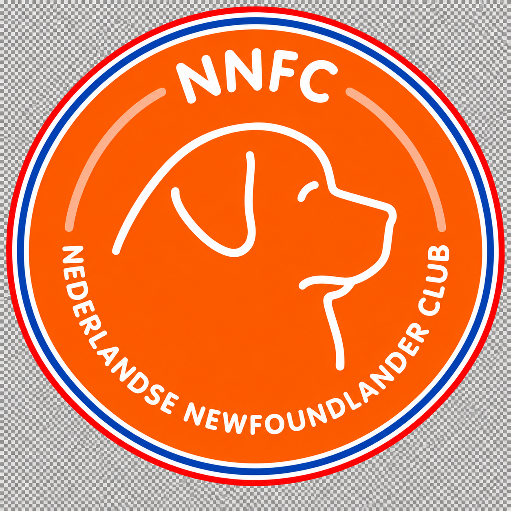

Beheer / Admin – Voorbereiding & Inschrijvingen (
2026
)
Inschrijven, baanindeling & 3 bijlagen, deelnemerslijst en jaarbeheer voor de wedstrijddag
Wedstrijdtafel →
Banen / Klokkers →
← Startscherm
Deel 1 • Basis
Importeren (Excel / CSV)
Deel 2
Nieuwe inschrijving
Deel 3
Baanindeling & 3 Bijlagen
Deel 4
Deelnemerslijst & Banen
Deel 5 • Afsluiten
Back-up & Jaarvergrendeling
← Terug
Wedstrijdtafel
Opgeslagen